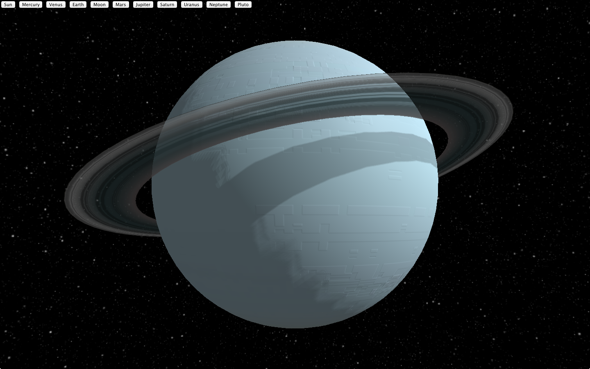

Flying Spaceship
A Mini Game in 3D with HTML5
What we gonna do ?
- a mini game called 'flying spaceship'
- all in browser
- three.js to get 3d
- webaudio api to get sound
Expect Final Result

Steps
- threejs boilerplate
- then spaceships
- then move it via keyboard
- then planets and stars
- then collisions
- then sounds
Let's Get Started
Install three.js boilerplate
- Basic WebGL Page
- only a moving cube
- best practices already setup
- tunable thru yeoman
Three.js + yeoman
Smoother
- used to generate boilerplate with yo
- used to handle packages with bower
- but not required
Install three.js boilerplate
Make folder
mkdir flyingspaceship
cd flyingspaceship
Generate boilerplate with yeoman
yo threejs-boilerplate
Install three.js boilerplate
Serves Static Files
make server
Result

That's a start...
Let's Add SpaceShips
threex.spaceships
- got it from threex extensions
- install with bower
- or get the files on github
bower install threex.spaceships
Wait!
What is threex ?
A Bit on threex ?

threex modules with require.js
- Most threex extension support require.js
- Convention:
package.require.jsat project root - require this file to load the module
Required ?
- Optional
- Feel free to pick another tech if you wish
- Faster to dev tho
Include it in the code
Find the require line and add
require([ 'bower_components/threex.spaceships/package.require.js'
, 'bower_components/threex.spaceships/examples/vendor/three.js/examples/js/loaders/OBJMTLLoader.js'
, 'bower_components/threex.spaceships/examples/vendor/three.js/examples/js/loaders/OBJLoader.js'
, 'bower_components/threex.spaceships/examples/vendor/three.js/examples/js/loaders/MTLLoader.js'
], function(){
// ...
});
Add SpaceShip
put that after the scene init
var spaceship = null;
THREEx.SpaceShips.loadSpaceFighter03(function(object3d){
scene.add(object3d)
spaceship = object3d
})
Result

Almost... Let's remove the cube :)

Not Bad... lack of interactivity
Controls by Keyboard
threex.keyboardstate
Basic Usage
var keyboard = new THREEx.KeyboardState();
if( keyboard.pressed("shift+H") ){
console.log('you are pressing shift and H')
}
threex.keyboardstate setup
Install it with bower
bower install threex.keyboardstate
Include it with require.js
require([ 'bower_components/threex.keyboardstate/package.require.js'
], function(){
// ...
});
Done... not too hard like last time
Controls Player With Keyboard
The Algo
- add a function in the rendering loop
- monitor keyboard state
- move spaceship accordingly
Pitfalls
- async in spaceship loading
- speed independent of fps
The Code
// create keyboard instance
var keyboard = new THREEx.KeyboardState();
// add function in rendering loop
onRenderFcts.push(function(delta, now){
// only if the spaceship is loaded
if( spaceship === null ) return;
// set the speed
var speed = 1;
// only if spaceships is loaded
if( keyboard.pressed('down') ){
spaceship.position.y -= speed * delta;
}else if( keyboard.pressed('up') ){
spaceship.position.y += speed * delta;
}
})
Result
What goes well with spaceships ?
Let's add planets
threex.planets
- content module for threex
- available in threex.planets
- blog post explaining internals here
- with bower and require.js again
Earth demo link
Earth, cloud, atmosphere, stars, moon, shadow

Select Any planets link
based on planetpixelemporium

threex planets with bower
bower install threex.planets
Now it is in bower_components/threex.planets/
Rather Easy...
threex planets with require.js
Find require.js call in the header and put that
require([ 'bower_components/threex.planets/package.require.js'
], function(){
// ...
});
Done... not too hard
The Code
var moonMesh = THREEx.Planets.createMoon()
scene.add(moonMesh)
The Result link

a bit overcrowded
Move Spaceship Away
spaceship = object3d
spaceship.rotateY(Math.PI/2)
spaceship.position.x = -1
The Result link

Make The Moon Moves
Initial position
function resetMoon(){
moonMesh.position.x = 5
moonMesh.position.x += 5 * (Math.random()-0.5)
moonMesh.position.y = 2 * (Math.random()-0.5)
}
resetMoon()
Make The Moon Moves
Animate the moon and handle limits
onRenderFcts.push(function(delta, now){
// move the moon to the left
moonMesh.position.x += -1 * delta;
// make it warp
if( moonMesh.position.x < -3 ) resetMoon()
})
The Result link

Grey Background ? Not Too Shabby
Let's add Stars!
Stars
- part of threex.planets
- no install needed
How ? with a environmantal sphere
- Large Sphere
- we are at its center
- we see the inside of it
- with a proper texture it does the tricks
The Texture
Part of threex.spaceships module
The Code
a geometry
var geometry = new THREE.SphereGeometry(90, 32, 32)
a material
var url = 'bower_components/threex.planets/examples/images/galaxy_starfield.png'
var material = new THREE.MeshBasicMaterial({
map : THREE.ImageUtils.loadTexture(url),
side : THREE.BackSide
})
a mesh
var starSphere = new THREE.Mesh(geometry, material)
scene.add(starSphere)
The Result link

a bit of Game Play
Let's add Collision
Collision for GamePlay
- Goal: destroy moons
- Means: going thru the moon destroy it
Algo
- collide if distance < 3
- if contact, reset moon position
Pitfalls
- async model loading
- spaceship isn't spheric
Code to add
onRenderFcts.push(function(delta, now){
// only if the spaceship is loaded
if( spaceship === null ) return
// compute distance between spaceship and the moon
var distance = moonMesh.position.distanceTo(spaceship.position)
if( distance < 0.3 ){
resetMoon()
}
})
The Result link

What about sounds
Let's make some noise
Use Web Audio API
- low latency sound API for games
- webaudiox.js : bunch of helpers
- heavily documented
- Explosion Sound from freesounds.org
Installation with bower
bower install webaudiox
now files are in bower_components/webaudiox as usual
Include it with require.js
require([ 'bower_components/webaudiox/build/webaudiox.js'
], function(){
// ...
});
Init Web Audio
var context = new AudioContext()
var lineOut = new WebAudiox.LineOut(context)
lineOut.volume = 0.2
Load Sound
var soundBuffer;
// load the sound
var soundUrl = 'sounds/102720__sarge4267__explosion.wav'
WebAudiox.loadBuffer(context, soundUrl, function(buffer){
soundBuffer = buffer
})
Function to play
// setup a play function
function playExplosionSound(){
if( !soundBuffer ) return
var source = context.createBufferSource()
source.buffer = soundBuffer
source.connect(lineOut.destination)
source.start(0)
return source
}
Play Sound on contact
var distance = moonMesh.position.distanceTo(spaceship.position)
if( distance < 0.3 ){
resetMoon()
playExplosionSound()
}
Result link

and we are ...
DONE!
Let's Pat our back
- pure html5 game
- 3d models
- collision
- sounds
- mini gameplay
not bad!
Result link

not bad for less than 1h
- Thanks to threex modules
- Thanks to three.js boilerplate
- Thanks to yeoman